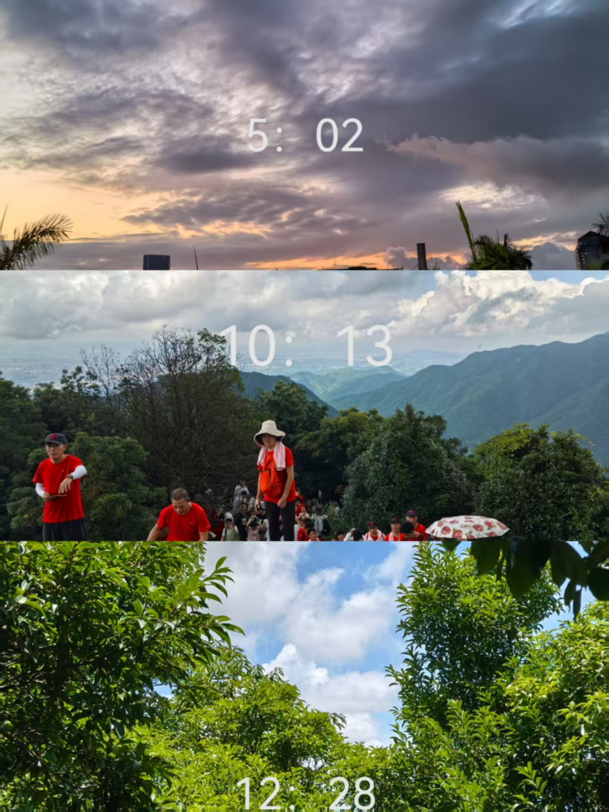
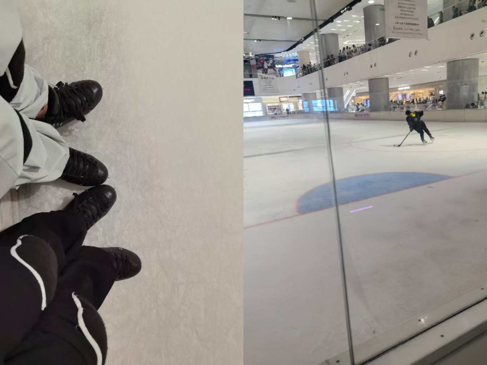
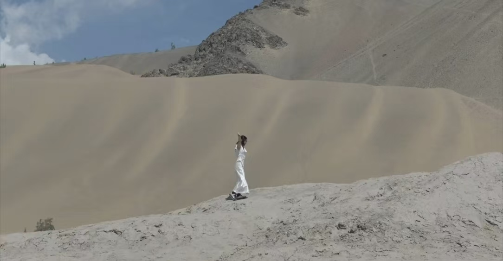

01 / 03FIND A STEADY PACE
把日常
过得有力量。
规律的运动不追求瞬间的结果，而是建立一种可以持续的状态，让身体和思考都保持开放。


01 / 03FIND A STEADY PACE
规律的运动不追求瞬间的结果，而是建立一种可以持续的状态，让身体和思考都保持开放。

02 / 03FIND YOUR BALANCE
滑冰让我感受到，平衡不是保持不动，而是在速度、重心和节奏的变化中不断调整。

03 / 03OPEN IN MOTION
行动会改变思考的速度。走进不同的空间，也让身体、视线和想法持续保持流动。
A FEW NOTES
给长期投入留下余地。
接受慢一点，但不断向前。
让身体带动新的想法。